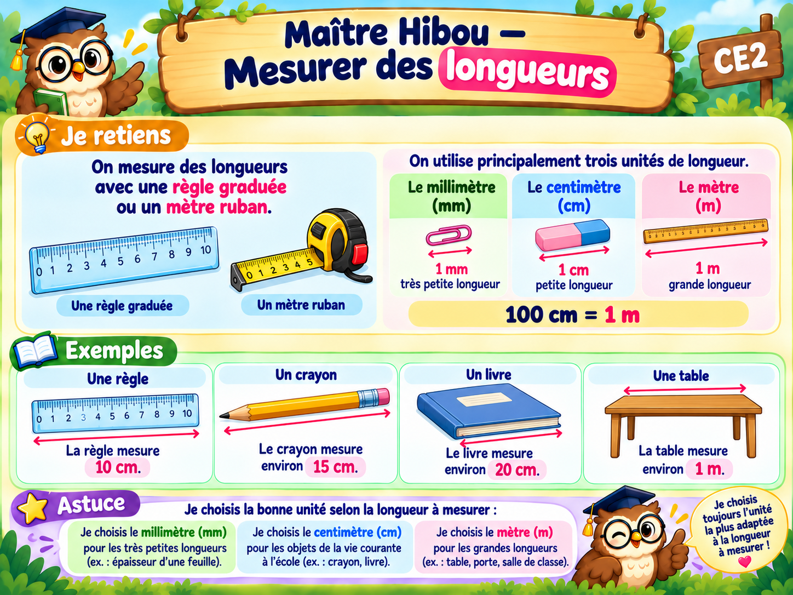

À toi de jouer !
10 exercices. Écris ou choisis ta réponse, vérifie, puis avance.
Bravo ! Tu as terminé les 10 exercices.
Tu peux maintenant valider ta leçon.

10 exercices. Écris ou choisis ta réponse, vérifie, puis avance.
Tu peux maintenant valider ta leçon.